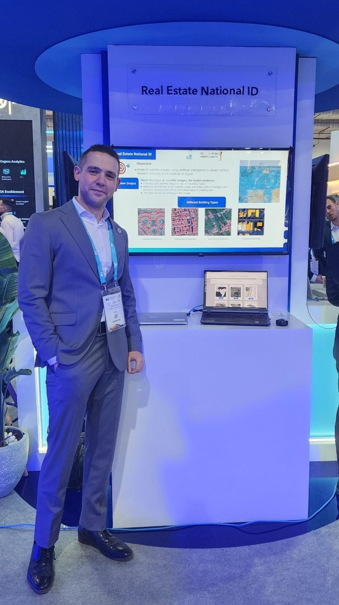

Mohamed Badran
Associate R&D Engineer, Applied Innovation Center
M.S. Student and Graduate Teaching Assistant, Alexandria University
I am a researcher in computer vision and machine learning, with interests in object detection, generative models, image restoration, and medical image analysis. I am currently an Associate R&D Engineer at the Applied Innovation Center in Egypt and an M.S. student in Computer and Systems Engineering at Alexandria University.
My recent work includes research on detection transformers, ultrasound view synthesis, underwater image enhancement, and Arabic NLP. I am interested in PhD opportunities in computer vision and machine learning.
Research interests
- Object detection and detection transformers
- Generative models, diffusion models, and image generation
- Image restoration and enhancement
- Medical image analysis and reconstruction
- 3D visual understanding and Gaussian-based rendering
Publications
AlexUNLP-NB at SemEval-2025 Task 1: A Pipeline for Idiom Disambiguation and Visual Representation
AlexUNLP-BH at StanceEval2024: Multiple Contrastive Losses Ensemble Strategy with Multi-Task Learning for Stance Detection in Arabic
See Google Scholar for the most up-to-date list.
Selected Projects
Multi-Task Medical Image Classification and Segmentation
Developed a unified deep learning framework for medical image classification and segmentation across multiple organs, integrating MMSegmentation and MMPretrain within a shared pipeline.
3D Object Detection and Segmentation for Self-Driving Cars
Worked on 3D object detection and segmentation using KITTI and SemanticKITTI, with point clouds, stereo imagery, sensor fusion, and knowledge distillation.
Real Estate National ID
Contributed to a national-scale AI system for identifying and delineating buildings from satellite imagery to support structured geospatial records.
KITAB: Knowledge-Integrated Translation Agent for Books
Developed a multi-agent translation framework using LLMs, knowledge-graph retrieval, and iterative refinement to improve full-book translation quality.
Autonomous Underwater Vehicle
Worked on autonomous navigation and vision-based object detection and classification for a remotely operated underwater vehicle.
Experience
Applied Innovation Center
Associate R&D Engineer (Sep 2024 – Present)
Junior R&D Engineer (Sep 2023 – Sep 2024)
Alexandria University
Graduate Teaching Assistant (Sep 2023 – Present)
Courses: Pattern Recognition, Introduction to Machine Learning, Computer Vision
Alexandria University
Undergraduate Research Assistant (Aug 2022 – Jan 2023)
Supervisor: Dr. Marwan Torki
Education
Alexandria University
M.S. in Computer and Systems Engineering, 2023–2027 (expected)
GPA: 4.0
Alexandria University
B.S. in Computer and Systems Engineering, 2018–2023
With Honors · GPA: 3.77
Awards
- 1st Place — ArabicNLP 2024 Shared Task 4: StanceEval 2024
- 3rd Place — SemEval 2025 Task 1, Subtask A
- 3rd Place — NOAA Machine Learning Ocean Exploration Video Challenge
- 2nd Place — Autonomous Underwater Vehicle, Alamein Robotics Championship
Contact
I welcome conversations about research collaboration and PhD opportunities in computer vision and machine learning.
es-mohamedmostafabadran@alexu.edu.eg
Alexandria, Egypt